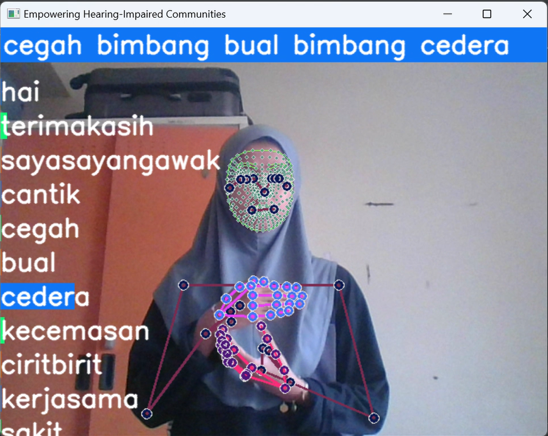
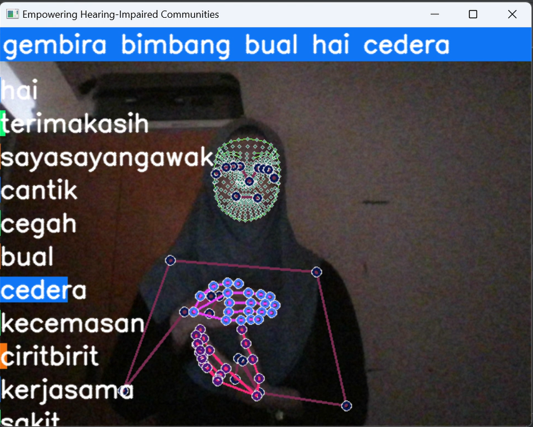
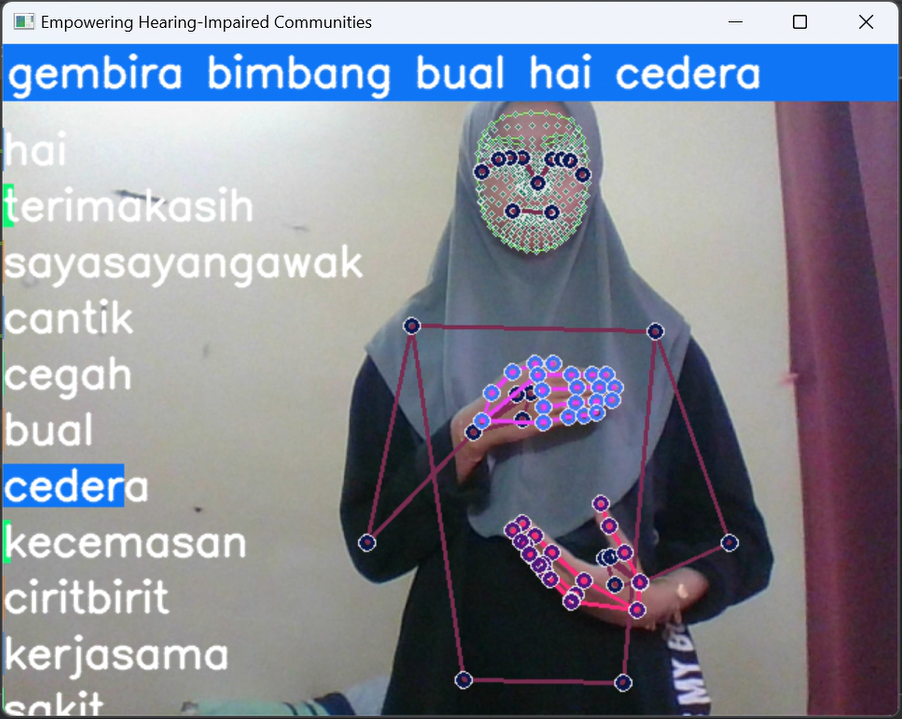
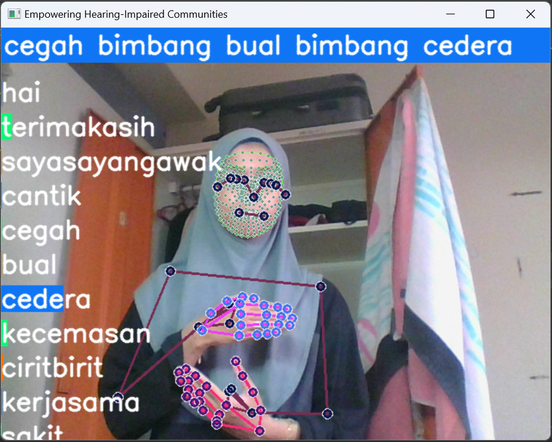

Developed a cutting-edge real-time sign language interpreter, leveraging advanced Python libraries including OpenCV, TensorFlow, MediaPipe, Ski-Learn and LSTM. Using Malaysia Sign Languages, this project harnesses the power of computer vision to accurately recognize hand and finger positions, translating complex sign language gestures into text. The solution is designed to enhance communication accessibility for hearing-impaired individuals, bridging the gap between sign language users and the broader community. Images shown are the sign performed on 4 different situations, plain background, crowded background, good lighting and bad lighting.



